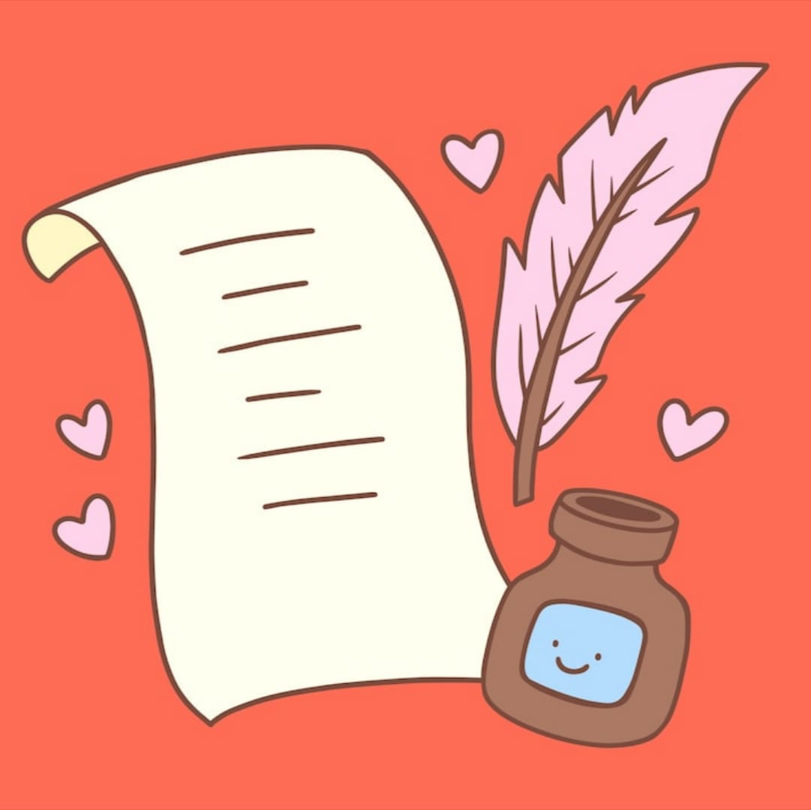

Colección de Poemas
Un proyecto dedicado a explorar emociones, vivencias e ideas a través del lenguaje poético.
Descripción
Este proyecto consiste en la creación de una colección de poemas originales que exploran temas como la identidad, la memoria, el tiempo y la sensibilidad humana. Cada poema busca transmitir una experiencia emocional mediante un lenguaje metafórico y una estructura libre experimentando con nuevas formas expresivas.

Detalles
El objetivo es crear un poemario que invite a la reflexión y permita al conectar con emociones a través de una lectura breve, musical y simbólica.
Información del proyecto
- Tipo: Poemario personal
- Áreas: Escritura creativa, edición, diseño literario
- Fecha: 2025
- Ubicación: El Salvador